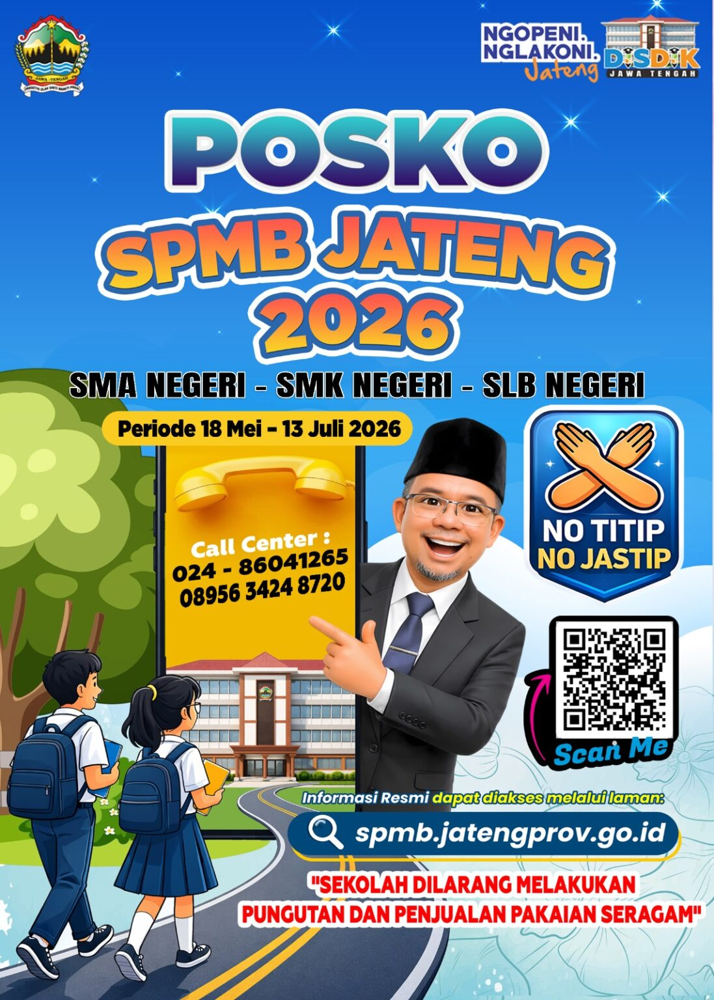
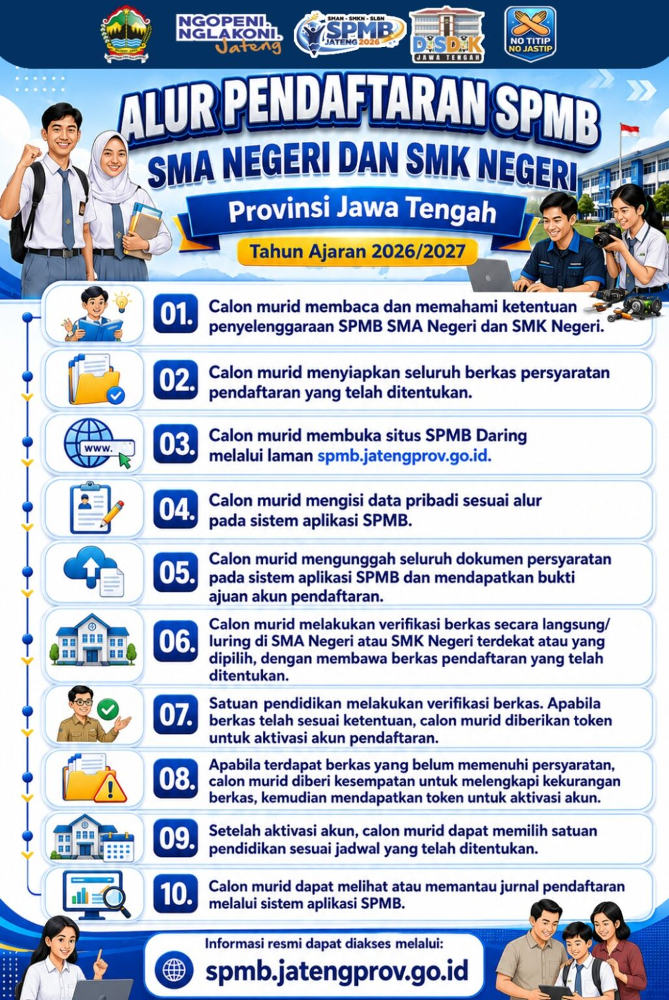
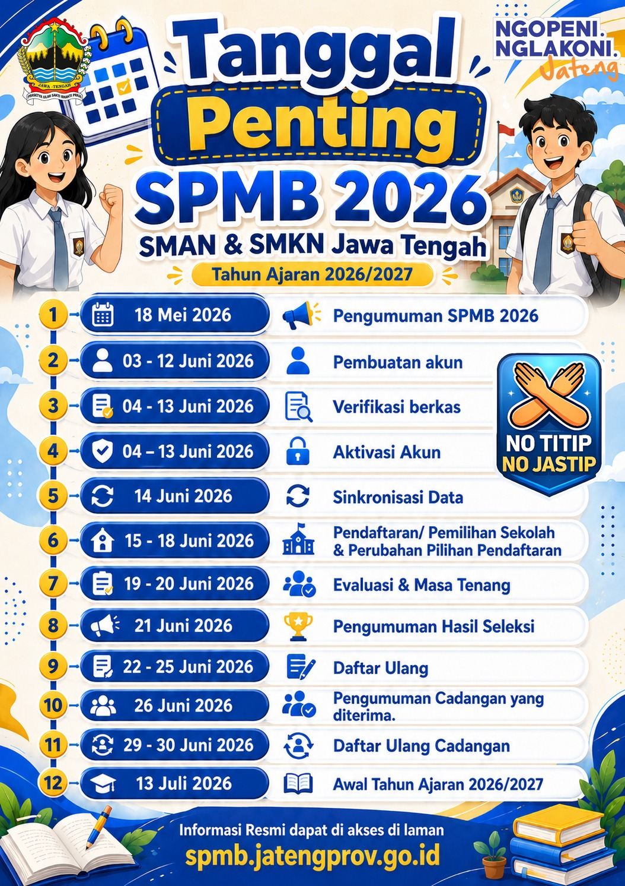
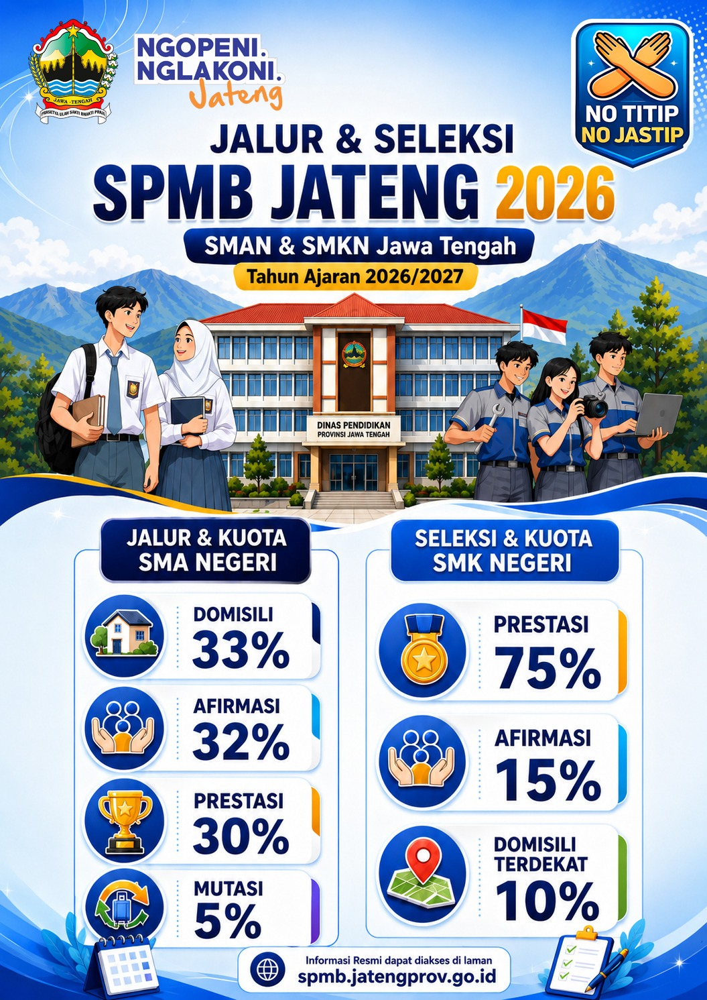

Mengenal SPMB Jateng 2026: Sistem Baru Penerimaan Murid Baru di Jawa Tengah

Pemerintah Provinsi Jawa Tengah melalui Dinas Pendidikan resmi menerapkan sistem penerimaan murid baru dengan nomenklatur baru, yaitu Sistem Penerimaan Murid Baru atau SPMB Jateng 2026.
Sistem ini menjadi bagian penting dalam proses penerimaan murid baru untuk tahun ajaran 2026/2027. Calon murid dan orang tua perlu memahami ketentuan serta tahapan pendaftaran agar dapat mengikuti proses dengan baik.
Fokus Utama SPMB Jateng 2026
Salah satu hal yang menjadi perhatian dalam pelaksanaan SPMB Jateng 2026 adalah komitmen terhadap proses penerimaan yang transparan dan objektif.
Proses penerimaan murid baru dilakukan melalui mekanisme resmi dan sistem yang telah ditentukan.

Ruang Lingkup SPMB
SPMB Jateng 2026 mencakup beberapa satuan pendidikan yang berada dalam sistem penerimaan murid baru di Jawa Tengah.
- Sekolah Menengah Atas Negeri (SMAN)
- Sekolah Menengah Kejuruan Negeri (SMKN)
- Sekolah Luar Biasa Negeri (SLBN)
- Sekolah swasta kemitraan sesuai ketentuan yang berlaku

Jalur Seleksi
Dalam pelaksanaannya, jalur penerimaan disesuaikan dengan karakteristik satuan pendidikan dan ketentuan yang telah ditetapkan.
Jalur SMA Negeri
- Jalur Zonasi
- Jalur Prestasi
- Jalur Afirmasi
- Jalur Perpindahan Tugas Orang Tua
Jalur SMK Negeri
- Kuota Domisili Terdekat
- Kuota Prestasi / Nilai Rapor
- Kuota Afirmasi

Tahapan yang Perlu Diperhatikan
Calon murid dan orang tua perlu memperhatikan setiap tahapan penerimaan, mulai dari persiapan dokumen hingga proses pengumuman hasil seleksi.
- Verifikasi berkas pendaftaran
- Penentuan nilai akhir
- Pengumuman hasil seleksi
- Proses daftar ulang sesuai ketentuan
Kesimpulan
SPMB Jateng 2026 menjadi sistem penting dalam proses penerimaan murid baru di Jawa Tengah. Calon murid diharapkan selalu mengikuti informasi dan ketentuan resmi agar proses pendaftaran dapat berjalan dengan lancar.
SMK Negeri 1 Kutasari turut memberikan informasi kepada masyarakat sebagai bentuk pelayanan informasi pendidikan bagi calon murid dan orang tua.